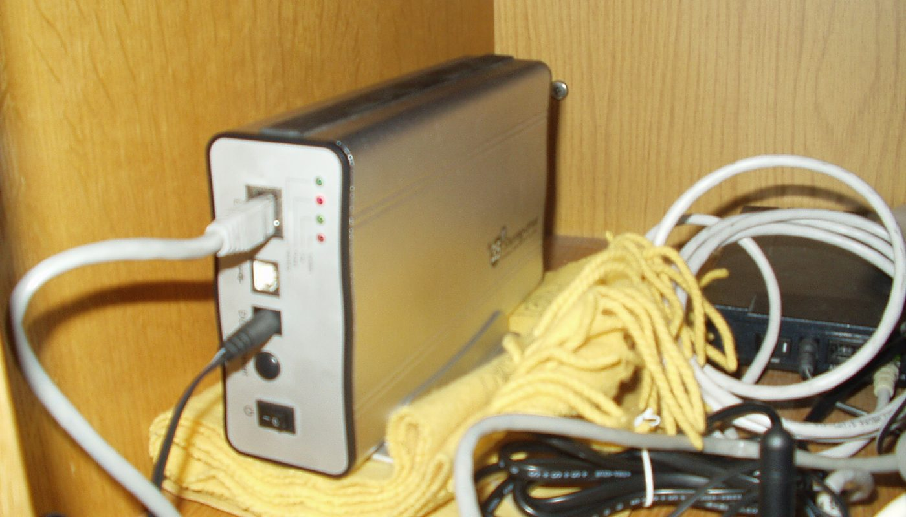
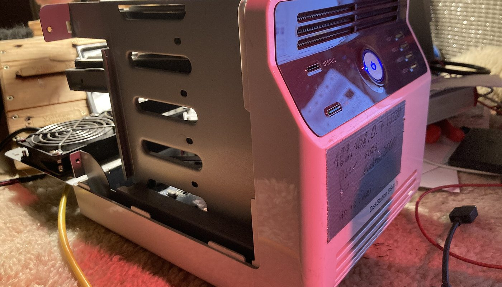

Logiciel libre · un lien partenaire Amazon.fr, étiqueté · prix relevés le 2 oct. 2026
Vos photos en privé, sans abonnement : Immich face au coût réel d'iCloud et de Google Photos

La sauvegarde de vos photos est devenue un abonnement : chez Apple, l'offre 2 To coûte 9,99 €/mois, soit près de 120 € par an (relevé le 2 oct. 2026). Immich, logiciel libre, fait le même travail sur votre machine. Reste à savoir combien coûte cette machine — un NAS d'entrée de gamme était à 194,99 € le même jour — et ce que vous renoncez à acheter en échange.
Un lien partenaire Amazon.fr, étiqueté — voir comment ça marche Prix lus le 2 oct. 2026 Licence libre AGPL-3.0
En bref
- Le logiciel est gratuit. Immich est publié sous licence libre AGPL-3.0, sans abonnement ni palier premium. Vos photos restent sur votre machine.
- Le coût de l'abonnement chez Apple (relevé le 2 oct. 2026 sur apple.com/fr) : 0,99 €/mois (50 Go), 2,99 €/mois (200 Go), 9,99 €/mois (2 To) — soit 119,88 €/an au palier 2 To.
- Le coût de la machine : un NAS 2 baies d'entrée de gamme relevé le 2 oct. 2026 à 194,99 € TTC (UGREEN NASync DH2300), achat unique — disques non compris.
- Ce que fait Immich : sauvegarde automatique de la galerie du téléphone, reconnaissance faciale, recherche, albums partagés — tout depuis chez vous.
- Ce qui décide du budget final : les disques et la sauvegarde. Nous n'avons pas chiffré ces deux postes, donc ils n'apparaissent dans aucun total ici.
« Zéro abonnement », ça veut dire quoi exactement
Immich fait la même chose que Google Photos ou iCloud Photos : il sauvegarde automatiquement les photos et vidéos de votre téléphone, il les range, il reconnaît les visages, il permet de chercher et de partager des albums. La différence n'est pas la fonction — c'est où vivent les fichiers. Avec Immich, ils sont sur un serveur chez vous.
Cette bascule a deux conséquences qu'il faut regarder en face :
Ce que vous prenez en charge — les disques, la sauvegarde, la sécurité des accès, les mises à jour. Chez un service comme iCloud ou Google Photos, cette partie est faite pour vous ; ici, c'est vous l'administrateur. Comparaison du modèle d'Immich (auto-hébergement) avec celui des services clés en main, établie le 2 octobre 2026. Aucun chiffre de performance inventé : ce sont deux façons différentes de rendre le même service.
Autrement dit : Immich n'est pas « gratuit », il est sans abonnement. Le paiement se déplace de la mensualité vers le matériel — et vers le temps que vous passez à l'administrer.
Les prix : l'abonnement d'un côté, la machine de l'autre
Il y a deux façons de lire ce choix, et nous les séparons. À gauche, le coût annuel de l'abonnement Apple (relevé sur apple.com/fr le 2 oct. 2026). À droite, le prix d'un NAS d'entrée de gamme relevé le même jour — un achat unique, auquel s'ajoutent les disques.
Coût annuel d'iCloud selon le palier (€/an, relevé le 2 oct. 2026)
Barres proportionnelles aux montants ci-dessus, base à zéro. Prix mensuels relevés sur apple.com/fr le 2 octobre 2026, ramenés au coût annuel (×12). Le NAS (194,99 € TTC, achat unique) n'apparaît pas dans ce graphique car il n'est pas un montant annuel : les deux lignes ne sont pas de même nature.
| Où | Quoi | Prix relevé le 2 oct. 2026 | Ce que le prix ne comprend pas |
|---|---|---|---|
| apple.com/fr | iCloud+ 50 Go | 0,99 €/mois (≈ 11,88 €/an) | — |
| apple.com/fr | iCloud+ 200 Go | 2,99 €/mois (≈ 35,88 €/an) | — |
| apple.com/fr | iCloud+ 2 To | 9,99 €/mois (≈ 119,88 €/an) | — |
| ai-fr.ugreen.com | NAS UGREEN NASync DH2300 — 2 baies (badge presse « Meilleur NAS 2025-2026 ») | 194,99 € TTC (achat unique) | les disques, la sauvegarde, l'électricité |
La lecture honnête : comparer 194,99 € à 9,99 €/mois ne dit rien tant qu'on ne fixe pas un horizon. Au palier 2 To d'Apple, l'abonnement atteint 119,88 €/an ; additionné sur plusieurs années, il dépasse le prix d'un NAS d'entrée de gamme — mais ce dernier n'inclut pas les disques, et il ne « s'auto-sauvegarde » pas. Un calcul sérieux compare le matériel plus les disques au coût cumulé de l'abonnement sur la durée où vous comptez garder vos photos.
Les quatre pièges d'un serveur photo maison
1. Un serveur auto-hébergé n'est pas « plus sûr » tout seul
C'est l'illusion la plus répandue. Mettre ses photos chez soi ne les protège pas magiquement : un disque qui lâche, une erreur de manipulation, un incendie ou un vol peuvent tout emporter. Ce qui protège, c'est une sauvegarde — idéalement plusieurs copies, dont une hors du logement. Le logiciel livre la sauvegarde de votre téléphone vers le serveur ; la sauvegarde du serveur lui-même, c'est à vous de la mettre en place.
2. Les disques coûtent souvent plus cher que le boîtier
Le NAS relevé à 194,99 € est nu : sans disques, il ne stocke rien. Et pour des photos, mieux vaut au moins deux disques (redondance) qu'un seul. Ce poste n'est pas dans notre total, parce que nous ne l'avons pas chiffré — mais il pèse lourd dans le budget réel. Ne l'oubliez pas en comparant au prix de l'abonnement.
3. L'accès depuis l'extérieur est la partie délicate
Consulter ses photos chez soi est facile. Depuis l'extérieur — en voyage, ou depuis la 4G — il faut exposer le serveur de façon sûre, ce qui passe en général par un accès chiffré plutôt que par l'ouverture d'un port. C'est l'étape où les débutants renoncent, ou, pire, exposent leurs données sans protection. Décidez de ce point avant d'acheter le matériel.

4. « Les mises à jour, c'est automatique » — non
Un service clef en main se met à jour pour vous. Un serveur auto-hébergé, non : c'est vous qui appliquez les correctifs, qui surveillez l'espace disque, qui réparez quand ça casse. Immich est très actif (version publiée fin septembre 2026, dépôt mis à jour le jour même de notre relevé), donc les évolutions arrivent vite — mais c'est à vous de les installer.
Trois chemins, selon ce que vous avez déjà
Aucun de ces trois n'est « le bon » : ils ne répondent pas à la même situation. Le seul mauvais choix est de basculer en auto-hébergé sans sauvegarde — c'est le moyen le plus rapide de perdre ses photos tout en croyant les avoir sécurisées.
La checklist avant de vous lancer
- Décidez de la sauvegarde avant tout le reste. Où est la deuxième copie, et la troisième ? Un serveur unique n'est pas une sauvegarde.
- Comptez les disques séparément du boîtier. Le NAS à 194,99 € est nu ; prévoyez au moins deux disques pour la redondance.
- Réglez la question de l'accès distant avant d'acheter : consultation locale seulement, ou accès chiffré depuis l'extérieur ?
- Vérifiez la compatibilité. Tous les NAS ne font pas tourner Immich (conteneurs Docker) ; renseignez-vous sur le modèle précis.
- Fixez un horizon de comparaison. Abonnement 2 To à 119,88 €/an contre matériel + disques : sur combien d'années ? Le bon chiffre dépend de votre réponse.
- Ne déduisez pas « privé = sûr ». La confidentialité, oui ; la sécurité des données, c'est la sauvegarde qui la donne.
Par où commencer, concrètement
Ces liens sont ceux du projet et des sources. Aucun n'est affilié : ils sont là pour que vous vérifiiez à la source.
- Le projet : immich.app — documentation et installation officielles.
- Le code : dépôt immich-app/immich sur GitHub (AGPL-3.0).
- Le coût de référence : la page iCloud d'Apple, pour vérifier le prix du jour (il bouge).
- Le matériel : comparez le prix d'un NAS et de ses disques chez plusieurs vendeurs le jour J.
Le réflexe qui évite la mauvaise surprise : régler d'abord la sauvegarde et l'accès distant, et seulement ensuite comparer les machines et les abonnements.
Questions
Immich est-il vraiment gratuit ?
Oui, licence libre AGPL-3.0 : pas d'abonnement, pas de palier premium. Vous payez le matériel (serveur ou NAS) et les disques, pas le logiciel.
Combien coûte iCloud comparé à un serveur maison ?
Chez Apple (relevé le 2 octobre 2026) : 0,99 €/mois pour 50 Go, 2,99 €/mois pour 200 Go, 9,99 €/mois pour 2 To — soit jusqu'à 119,88 €/an. Un NAS d'entrée relevé le même jour : 194,99 € TTC, achat unique, disques non compris.
Immich remplace-t-il Google Photos ?
Pour la sauvegarde, la recherche et les albums, oui. Mais l'infrastructure redondante et le support d'un grand service, non : chez Immich, l'administrateur, c'est vous.
Risque-t-on de perdre ses photos ?
Uniquement si l'on ne sauvegarde pas. Le disque qui lâche, l'erreur, le vol peuvent tout emporter. Gardez au moins deux copies, dont une hors du logement.
Cette page contient-elle des liens affiliés ?
Oui, un. Depuis le 3 octobre 2026, cette page porte un lien partenaire Amazon.fr (Identifiant de suivi : honestswitch-21), étiqueté « lien affilié » avec rel=sponsored. Le prix et la disponibilité sont affichés par Amazon au moment du clic — nous ne les recopions pas. Aucun autre lien de cette page ne nous rapporte quoi que ce soit.
Comment cette page est faite
- Un lien affilié, et un seul. Depuis le 3 octobre 2026, cette page porte un lien partenaire Amazon.fr (Identifiant de suivi : honestswitch-21), étiqueté « lien affilié » avec
rel="sponsored", à l'endroit où il apparaît. Nous ne recopions ni prix ni disponibilité : ils sont affichés par Amazon au moment du clic. Aucun autre lien de cette page ne nous rapporte quoi que ce soit. - Les prix iCloud ont été relevés sur apple.com/fr le 2 octobre 2026 (0,99 €, 2,99 €, 9,99 €/mois) et ramenés au coût annuel. Le prix du NAS (194,99 € TTC) provient du relevé de notre veille le même jour. Chaque montant porte sa date.
- Ce que nous ne savons pas est écrit comme tel : le prix des disques et de la sauvegarde hors site, la consommation électrique, et la commission nette d'un éventuel programme d'affiliation. Rien de tout cela n'apparaît dans un total.
- Les affirmations sur le logiciel (Immich libre AGPL-3.0, version publiée fin septembre 2026, dépôt très actif) proviennent du dépôt officiel, consulté le 2 octobre 2026.
- Nous ne fabriquons aucun avis, aucun témoignage et aucune statistique.
- Corrections : si un prix a changé ou si nous nous sommes trompés, écrivez-nous, nous corrigeons et nous datons la correction.
Sources
- Dépôt GitHub immich-app/immich — 115 445 étoiles, licence AGPL-3.0, dernier commit le 2 octobre 2026 (08:45 UTC), version v3.3.0-rc.1 publiée le 30 septembre 2026 (consultés via l'API GitHub le 2 octobre 2026).
- Page iCloud d'Apple (apple.com/fr) : 50 Go 0,99 €/mois ; 200 Go 2,99 €/mois ; 2 To 9,99 €/mois — relevés le 2 octobre 2026.
- NAS UGREEN NASync DH2300 (2 baies) — 194,99 € TTC, badge presse « Meilleur NAS 2025-2026 » affiché sur la fiche (ai-fr.ugreen.com), relevé le 2 octobre 2026.
- Photos : boîtier de stockage réseau — Hämmerle S, CC BY-SA 2.5 ; NAS ouvert (cage à disques) — Korrupt, CC BY 4.0. Toutes deux via Wikimedia Commons.
Avis clients
Avis sur ce guide, publiés après vérification. Chaque avis négatif reçoit une réponse publique — c'est comme ça qu'on s'améliore.
Les premiers avis seront publiés ici dès que de vrais lecteurs en enverront.
Où acheter — lien partenaire
Le lien ci-dessous est un lien partenaire Amazon.fr (Identifiant de suivi : honestswitch-21). Si vous achetez en passant par lui, Amazon nous verse une commission : le prix que vous payez ne change pas. Nous ne recopions ni le prix ni la disponibilité, que vous voyez affichés par Amazon au moment du clic.
Voir « NAS Synology » sur Amazon.fr lien affilié — commission pour nous, prix inchangé pour vous